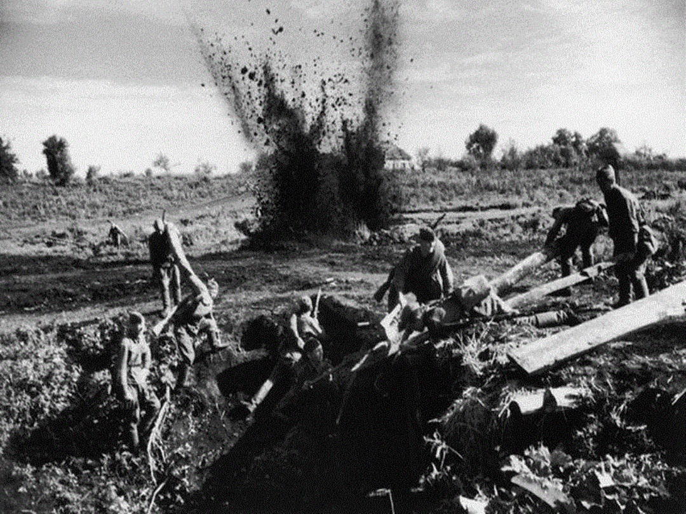
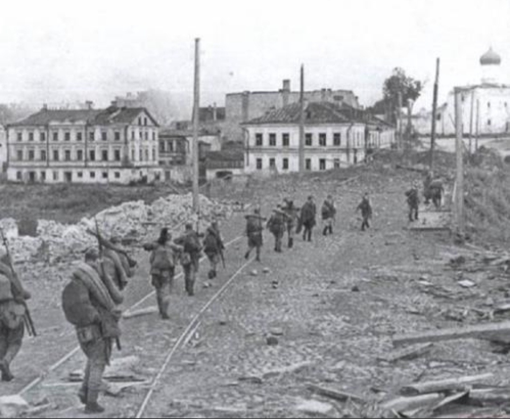
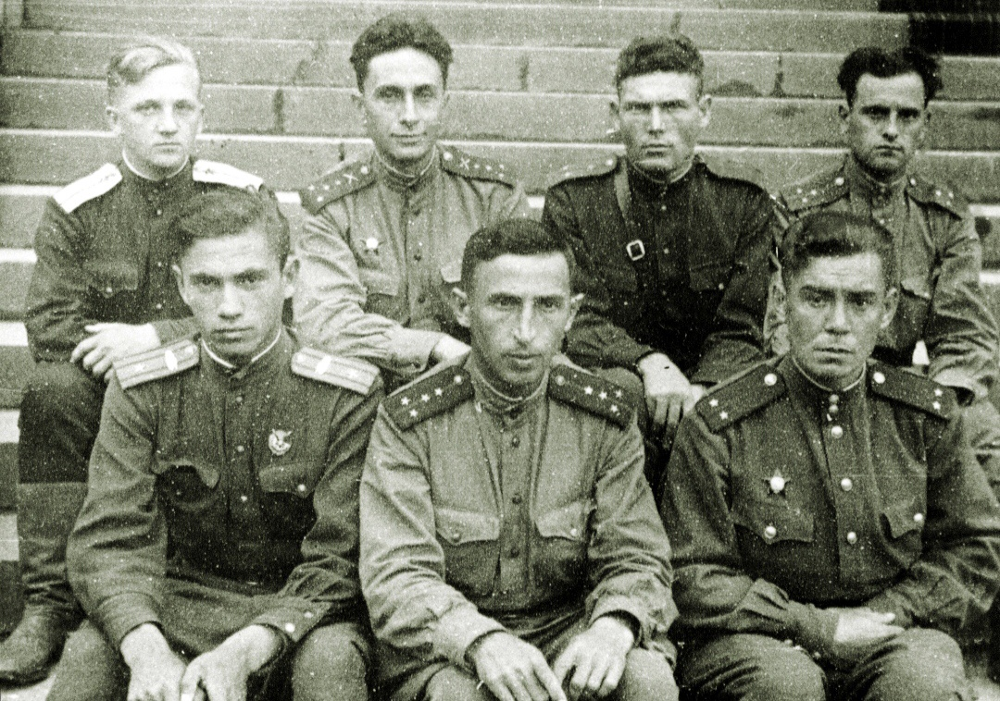
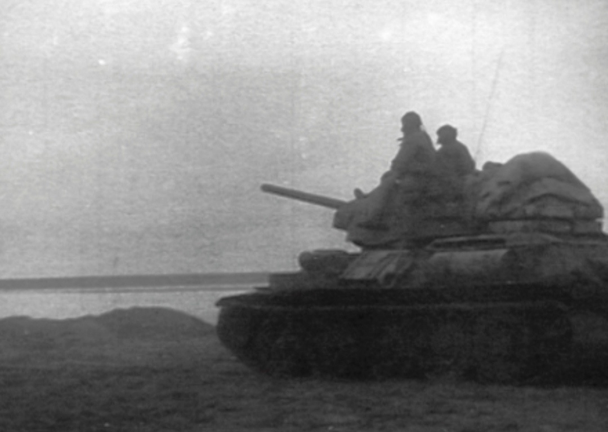
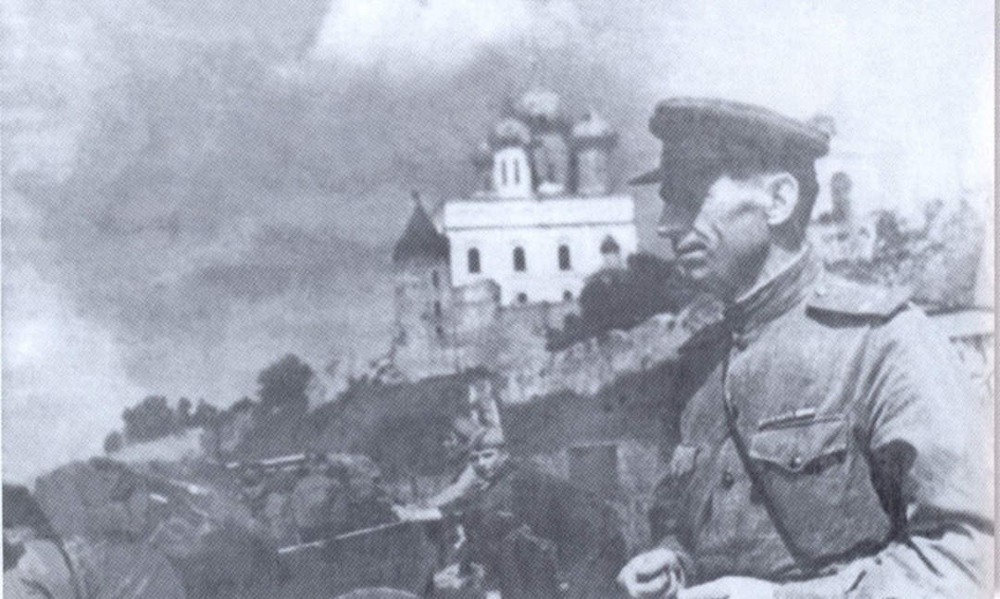
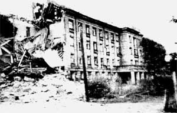
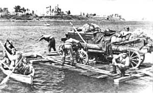
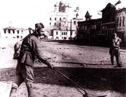

Конкретно Псков освобождала 42-ая Армия. Действия ее подразделений лучше всего описано в книге Н.М.Иванова «Невозвратимое. Записки старого псковича».
По замыслу советского командования, 42-я армия наносила удар по противнику на востоке в направлении пунктов Гора, Черняковицы, Клишево. 128-я стрелковая дивизия генерал-майора Д.А. Лукьянова, очистив от врага юго-восточную часть Пскова, должна была форсировать Великую и захватить плацдарм на Завеличье.
Вспомогательный удар планировалось нанести на севере укрепленного района противника, в обход неприступных Ваулинских высот, в направлении Хотица, Верхние Галковичи, Овсище.
376-й дивизии генерал-майора Н.А.Полякова предстояло овладеть Запсковьем, выйти на Великую севернее Кремля, форсировать реку и захватить плацдарм на западном ее берегу.
128-я стрелковая дивизия находилась на фронте с первого дня Великой Отечественной войны. «Двадцать второго июня, ровно в четыре часа» она грудью встретила первый удар немецко-фашистских войск в Литве, на государственной границе. В ее истории были трудные дни отступления на восток под натиском превосходящих сил противника, активное участие в обороне Ленинграда и прорыве блокадного кольца, Ленинградско-Новгородская наступательная операция.
Дивизия находилась в ряду наиболее закаленных, испытанных в жестоких боях соединений Советской Армии. Полками, батальонами, ротами командовали в ней храбрые и умелые офицеры.
128-я дивизия развернула свой боевой порядок восемью километрами восточнее Пскова. Первый его эшелон составляли правофланговый 533-й стрелковой полк (напротив деревень Лажнево и Клишево) и левофланговый 374-й стрелковый полк (напротив деревень Горнево и Бердово). 41-й полк (без первого батальона, выведенного резерв командира дивизии) находился во втором эшелоне.
Тревожную ночь с 21 на 22 июля 1944 года командиры провели на своих командно-наблюдательных пунктах. На нейтральной полосе бесшумно работали саперы. В расположение противника направлены разведывательные группы.
Бойцы готовились к важной военной операции. Вспоминает бывший командир 374-го полка 128-й стрелковой дивизии К.А.Шестак: «Мы знали, что нам предстоит ходу, в короткие сроки, исчисляемые 2-3 часами, а на первом этапе минутами, форсировать реку Великую, поэтому по карте и по донесениям разведки в деталях изучали возможные места переправы, тыловые рубежи противника, резервы подручных средств. Мы не рассчитывали на табельные переправочные средства, поэтому с самого начала ориентировались на русскую смекалку и находчивость: учились быстро и надежно строить плоты, используя бочки, ящики, двери, оконные и дверные коробки, ворота, телефонные столбы.. Учебные атаки следовали одна за другой, согласно мудрой солдатской заповеди: «Больше пота - меньше крови».
Немецкое командование требовало от своих подчиненных взрывать и сжигать всё. За две недели с 8 по 22 июля 1944 года была уничтожена сохранившаяся до той поры половина города: взорваны мосты, разрушена электростанция, промышленные здания, исторические памятники, обращена в руины центральная часть города. Один из немецких офицеров при этом сказал : «Пскова больше нет и никогда не будет».
В советских частях всё было готово для нанесения решающего удара по врагу: сосредоточены на исходных позициях войска, пристреляны по целям орудия и минометы, саперы расширяют проходы в минных полях, «под пробку» заправлены горючим танки, самоходные орудия, самолеты. Поступит приказ командования, и вся эта могучая сила устремится вперед, к Победе!
В три утра 22 июля с передовой звонят на участке Лажнево, немцы ушли из первых траншей. Командир 533-го полка подполковник Панин передал приказ штурмовой группе: немедленно занять свободные траншеи и продвигаться дальше, навязывая бой противнику.
Начался бой с арьергардами противника за деревни Лажнево и Клишово. Особенно мешал так называемый «клишовский дот», из которого немцы вели фланговый пулеметный огонь. Отважные разведчики Василий Жуков и Роман Шалобода подползли к доту поближе и, забросав его гранатами, заставили фашистских пулеметчиков замолчать. Однако, 533-й полк, захватив Лажнево и Клишево, затем встретил упорное сопротивление врага и его продвижение вперед временно замедлилось.
Одновременно на сближение с противником двинулся соседний справа от 533-го полка - 374-й стрелковый полк. Вспоминает бывший пулеметчик А.Рожалин: «Окопами переднего края на нейтральную полосу быстро прошли, пригнувшись, саперы - снимать на проходах мины. Начали подтягиваться на исходный рубеж бойцы стрелковой роты. Все напряжены.
Громом ударила наша артиллерия, перенеся огонь с первой линии обороны врага дальше, в глубину ее. Вот долгожданная сигнальная ракета. Следом за разведчиками мы гуськом, один за другим, шагнули в заросли болота. Из вражеских окопов застрочили автоматы, взметнулись в небо ракеты. Преодолевая последние метры топи, перепрыгивая с кочки на кочку, наконец-то достигаем твердого грунта».
Артиллерийская подготовка была короткой, мощной, ошеломляющей. Свое веское слово сказали гвардейские минометы - прославленные «катюши».
Рассказывает бывший командир 374-го стрелкового полка полковник запаса К.А.Шестак: «Наш полк начал наступление 22 июля в 4 часа утра. Горизонт медленно прояснялся. С болота, которое лежало перед высотой Бердово, тянулся вверх сизый шлейф густого тумана. Как он был, кстати, этот туман! Он помог полку скрытно выйти к минным полям и проволочным заграждениям противника. Саперы обезвредили за день боя около тысячи мин и фугасов, подорвали несколько огневых точек врага, проделали 12 проходов в минных полях и заграждениях. Они открыли путь и дали сигнал к началу артподготовки... Противника застигли врасплох. Он даже не успел занять огневые позиции и усилить линию обороны».
Поднявшись на высоту Бердово, 374-й полк разорвал систему обороны гитлеровцев, атакуя с фланга, сравнительно легко овладел населенным пунктом Горнево.
Развивая наступление, полк атаковал станцию Березка. Первый батальон под командованием капитана Н.Коротаева в 6 часов утра подошел к Крестам. Предполагалось, что он нанесет по врагу только вспомогательный удар, так как перед полком простирался болотистый участок фронта, исключавший поддержку танков. Однако, используя внезапность, поддержанный мощным огнем артиллерии и атаками соседей, полк развил очень успешное наступление.
В районе Крестов 374-й полк встретил сильное сопротивление врага. Под губительным огнем пехота залегла. С левого фланга противник уже готовил контратаку с танками, держась за Кресты, как промежуточный рубеж обороны.
Кроме того, в этом районе размещался лагерь военнопленных. Фашисты не успели всех ликвидировать. Решительные действия наших войск помешали гитлеровцам учинить расправу. Артиллеристы в единоборстве с танками противника расчистили путь пехоте.
374-й полк, продолжая наступление, первым завязал бои непосредственно за Псков. Несмотря на то, что оба его фланга, ввиду отставания соседей, оказались открытыми, батальоны углубились в окраинные улицы города, выбивая немецких автоматчиков из домов и развалин.
Командование 128-й дивизии, поддержав наступательный порыв 374-го полка, приняло меры по обеспечению его флангов. С этой целью в распоряжение командира полка был передан 1-й батальон 741-го стрелкового полка, находившийся в резерве. Командир батальона капитан И.И. Баранов немедленно развернул свои подразделения на правом фланге 374-го полка и повел их в наступление.
В 6:30 22 июля прорвал оборону противника и перешел в наступление 1252-й стрелковый полк, а через 15 минут после него перешел в наступление и 1248-й полк, занимавший позиции восточнее Псковского озера.
Ровно в полдень 1250-й стрелковый полк под командованием А.И Глушкова завязал бой на северной окраине Пскова. И первыми, кто переступил здесь городскую черту, были бойцы разведвзвода лейтенанта Борисова. Батальоны устремились к реке Великой, сметая со своего пути оказывающие сопротивление группы фашистов.
Одну из стрелковых рот вел лейтенант Мурашев. Четыре миномета и шесть пулеметов - первые боевые трофеи бойцов его роты. Во главе ротной разведки шел командир отделения Трофимов. Вызвав на себя огонь, он выявил расположение огневых точек противника и завязал бой с целью прорыва к Великой. По рации командир 1250-го полка подполковник А.И.Глушков доложил командиру дивизии о том, что его батальоны вышли на берег Великой севернее устья Псковы и готовят подручные средства для переправы на западный берег.
374-й полк, миновав Крестовское шоссе, задержался возле железнодорожного переезда. «Из развалин завода «Выдвиженец», - вспоминает И.Марков, бывший сержант армейской роты связи, - застрочили пулеметы. Бойцы залегли. Попробовали пойти в обход, но и слева из разрушенного здания вокзала нас встретили огнем. Тогда батальон поднялся в атаку. Грянуло дружное «Ура!»... Захлебнулись вражеские пулеметы, побежали гитлеровцы. И вот я уже на территории завода «Выдвиженец», в первом, пусть разрушенном, но зато освобожденном здании родного города. А соседний батальон выбивал в то время гитлеровцев из здания вокзала».
Очищали железнодорожный вокзал и пристанционные здания от гитлеровцев подразделения 741-го стрелкового полка. Закопченные руины вокзала смотрели на наступающих мрачными провалами высоких оконных проемов. За ними засели немецкие автоматчики. Но им пришлось либо бежать, либо остаться там навсегда.
Железнодорожное полотно фашистские саперы изувечили изощренно, используя специальную машину. Она перерубала деревянные шпалы посредине, выдергивая из гнезд костыли. Вся конструкция сдвигалась с места и становилась непригодной для движения поездов. Часть железнодорожной насыпи была взорвана на такую глубину, что воронки заполнялись грунтовыми водами.
«С боем давался каждый шаг, - вспоминает И.Марков,- в развалинах домов засели фашисты. Вокруг ни одного целого дома, одни руины... Вот уже развалины гостиницы «Октябрьская». У Летнего сада я остановился, посмотрел на часы. Ровно 9 утра. Мы находимся в центре родного города».
От Летнего сада и Дома Советов воины 374-го стрелкового полка и приданного ему первого батальона 741-го полка, тесня противника, продвигались к реке Великой, под прикрытием плитняковой стены Окольного города и развалин домов на улицах Свердлова, Гоголя, Некрасова, Советской.
Они вышли на восточный берег реки на участке от Георгиевского взвоза до Покровской башни. С Завеличья на них обрушился шквальный огонь фашистских пулеметов, минометов и артиллерийских орудий, но толстые стены, возведенные предками, надежно защищали бойцов от пуль и осколков.
Отходя, фашисты уничтожили мосты и переправочные средства, явно рассчитывая задержать наступление наших войск и выиграть время для перегруппировки своих частей.
Но 374-й полк приступил к форсированию реки Великой незамедлительно. В его составе находился десантный отряд из ста пятидесяти умеющих плавать воинов-десантников. Ими командовал старший лейтенант И.Д.Головко. Отряд имел в своем распоряжении табельные средства для переправы - надувные жилеты. Правда, хватало их не всем. Большинству десантников пришлось обойтись самодельными плотиками и набитыми соломой плащ-палатками.
Вспоминает бывший командир 374-го стрелкового полка К.А.Шестак: «22 июля в 10 часов утра караван самодельных плотов и плотиков взял курс на Мирожский монастырь и церковь Климента. Мой контрольно-наблюдательный пункт был оборудован на вершине небольшого холма рядом с Покровской башней. Отсюда открывался хороший обзор обоих берегов реки. Для поддержки десанта огнем и подавления вражеских огневых средств на берегу реки было поставлено 36 артиллерийских орудий. С командиром десантного отряда мы имели прямую связь - подводную телефонную, радио-связь и визуальную. Уже к 11 часам утра 22 июля плацдарм на противоположном берегу был завоеван и прочно удерживался нами».
Вспоминает бывший пулеметчик 374-го стрелкового полка А.Рожалин: «Мы с пригорка прикрываем своих огнем «максима». Бьем по зарослям противоположного пологого берега. На воде начали взмывать вверх фонтаны: вражеские засады с противоположного берега повели сильный обстрел минами. Переношу огонь своего пулемета в глубину противоположного берега. Откуда-то справа, вдоль реки, застрочил вражеский пулемет. Aral Вон с того разрушенного кирпичного здания. Разворачиваю свой пулемет туда, вступаю с ним в поединок. Фашист засек и наш пулемет: кругом зацокали, засвистели пули. Скорей бы наши переплыли!»
Из донесения штаба 42-й армии от 22 июля 1944 года: «Особенно отличился пулеметный расчет Гуськова, непрерывно обеспечивавший форсирование реки. Артиллеристы 76-й минометной батареи метко поражали вражеские огневые точки. Орудийные расчеты Чернова, Кузнецова и Мельника прямой наводкой заставили замолчать огневые точки противника. Отлично прикрывал переправу и пулеметный расчет 1-й стрелковой роты. Бойцы открывали прицельный огонь, как только немцы пытались задержать продвижение подразделения».
Из доклада командира 128-й стрелковой дивизии генерал-майора Д.А.Лукьянова командованию 3-го Прибалтийского фронта: «Псков был превращен противником в мощный узел сопротивления. В зданиях установлены пулеметные точки, в фундаментах домов оборудованы дзоты и доты. Улицы и большая часть домов заминированы. Подразделения полка с ходу начали штурм города. Вперед были выдвинуты штурмовые группы, которые быстро и умело обезвреживали минные поля... За штурмовыми группами следовала пехота... Артиллеристы огнем прямой наводки уничтожали огневые точки противника. К 9:00 22 июля восточная часть Пскова была очищена от противника и наши подразделения вышли на берег реки Великой». По замыслу советского командования, 42-я армия наносила удар по противнику на востоке в направлении пунктов Гора, Черняковицы, Клишево. 128-я стрелковая дивизия генерал-майора Д.А. Лукьянова, очистив от врага юго-восточную часть Пскова, должна была форсировать Великую и захватить плацдарм на Завеличье.
Вспомогательный удар планировалось нанести на севере укрепленного района противника, в обход неприступных Ваулинских высот, в направлении Хотица, Верхние Галковичи, Овсище.
376-й дивизии генерал-майора Н.А.Полякова предстояло овладеть Запсковьем, выйти на Великую севернее Кремля, форсировать реку и захватить плацдарм на западном ее берегу.
128-я стрелковая дивизия находилась на фронте с первого дня Великой Отечественной войны. «Двадцать второго июня, ровно в четыре часа» она грудью встретила первый удар немецко-фашистских войск в Литве, на государственной границе. В ее истории были трудные дни отступления на восток под натиском превосходящих сил противника, активное участие в обороне Ленинграда и прорыве блокадного кольца, Ленинградско-Новгородская наступательная операция.
Дивизия находилась в ряду наиболее закаленных, испытанных в жестоких боях соединений Советской Армии. Полками, батальонами, ротами командовали в ней храбрые и умелые офицеры.
128-я дивизия развернула свой боевой порядок восемью километрами восточнее Пскова. Первый его эшелон составляли правофланговый 533-й стрелковой полк (напротив деревень Лажнево и Клишево) и левофланговый 374-й стрелковый полк (напротив деревень Горнево и Бердо во). 41-й полк (без первого батальона, выведенного резерв командира дивизии) находился во втором эшелоне.
Тревожную ночь с 21 на 22 июля 1944 года командиры провели на своих командно- наблюдательных пунктах. На нейтральной полосе бесшумно работали саперы. В расположение противника направлены разведывательные группы.
Бойцы готовились к важной военной операции. Вспоминает бывший командир 374-го полка 128-й стрелковой дивизии К.А.Шестак: «Мы знали, что нам предстоите ходу, в короткие сроки, исчисляемые 2-3 часами, а на первом этапе минутами, форсировать реку Великую, поэтому по карте и по донесениям разведки в деталях изучали возможные места переправы, тыловые рубежи противника, резервы подручных средств. Мы не рассчитывали на табельные переправочные средства, поэтому с самого начала ориентировались на русскую смекалку и находчивость: учились быстро и надежно строить плоты, используя бочки, ящики, двери, оконные и дверные коробки, ворота, телефонные столбы.. Учебные атаки следовали одна за другой, согласно мудрой солдатской заповеди: «Больше пота - меньше крови».
Немецкое командование требовало от своих подчиненных взрывать и сжигать всё. За две недели с 8 по 22 июля 1944 года была уничтожена сохранившаяся до той поры половина города: взорваны мосты, разрушена электростанция, промышленные здания, исторические памятники, обращена в руины центральная часть города. Один из немецких офицеров при этом сказал : «Пскова больше нет и никогда не будет».
В советских частях всё было готово для нанесения решающего удара по врагу: сосредоточены на исходных позициях войска, пристреляны по целям орудия и минометы, саперы расширяют проходы в минных полях, «под пробку» заправлены горючим танки, самоходные орудия, самолеты. Поступит приказ командования, и вся эта могучая сила устремится вперед, к Победе!
В три утра 22 июля с передовой звонят на участке Лажнево немцы ушли из первых траншей. Командир 533-го полка подполковник Панин передал приказ штурмовой группе: немедленно занять свободные траншеи и продвигаться дальше, навязывая бой противнику.
Начался бой с арьергардами противника за деревни Лажнево и Клишово. Особенно мешал так называемый «клишовский дот», из которого немцы вели фланговый пулеметный огонь. Отважные разведчики Василий Жуков и Роман Шалобода подползли к доту поближе и, забросав его гранатами, заставили фашистских пулеметчиков замолчать. Однако, 533-й полк, захватив Лажнево и Клишево, затем встретил упорное сопротивление врага и его продвижение вперед временно замедлилось.
Одновременно на сближение с противником двинулся соседний справа от 533-го полка - 374-й стрелковый полк. Вспоминает бывший пулеметчик А.Рожалин: «Окопами переднего края на нейтральную полосу быстро прошли, пригнувшись, саперы - снимать на проходах мины. Начали подтягиваться на исходный рубеж бойцы стрелковой роты. Все напряжены.
Громом ударила наша артиллерия, перенеся огонь с первой линии обороны врага дальше, в глубину ее. Вот долгожданная сигнальная ракета. Следом за разведчиками мы гуськом, один за другим, шагнули в заросли болота Из вражеских окопов застрочили автоматы, взметнулись в небо ракеты. Преодолевая последние метры топи, перепрыгивая с кочки на кочку, наконец-то достигаем твердого грунта».
Артиллерийская подготовка была короткой, мощной, ошеломляющей. Свое веское слово сказали гвардейские минометы - прославленные «катюши».
Рассказывает бывший командир 374-го стрелкового полка полковник запаса К.А.Шестак: «Наш полк начал наступление 22 июля в 4 часа утра. Горизонт медленно прояснялся. С болота, которое лежало перед высотой Бердово, тянулся вверх сизый шлейф густого тумана. Как он был, кстати, этот туман! Он помог полку скрытно выйти к минным полям и проволочным заграждениям противника. Саперы обезвредили за день боя около тысячи мин и фугасов, подорвали несколько огневых точек врага, проделали 12 проходов в минных полях и заграждениях. Они открыли путь и дали сигнал к началу артподготовки... Противника застигли врасплох. Он даже не успел занять огневые позиции и усилить линию обороны».
Поднявшись на высоту Бердово, 374-й полк разорвал систему обороны гитлеровцев, атакуя с фланга, сравнительно легко овладел населенным пунктом Горнево.
Развивая наступление, полк атаковал станцию Березка. Первый батальон под командованием капитана Н.Коротаева в 6 часов утра подошел к Крестам. Предполагалось, что он нанесет по врагу только вспомогательный удар, так как перед полком простирался болотистый участок фронта, исключавший поддержку танков. Однако, используя внезапность, поддержанный мощным огнем артиллерии и атаками соседей, полк развил очень успешное наступление.
В районе Крестов 374-й полк встретил сильное сопротивление врага. Под губительным огнем пехота залегла. С левого фланга противник уже готовил контратаку с танками, держась за Кресты, как промежуточный рубеж обороны.
Кроме того, в этом районе размещался лагерь военнопленных. Фашисты не успели всех ликвидировать. Решительные действия наших войск помешали гитлеровцам учинить расправу. Артиллеристы в единоборстве с танками противника расчистили путь пехоте.
374-й полк, продолжая наступление, первым завязал бои непосредственно за Псков. Несмотря на то, что оба его фланга, ввиду отставания соседей, оказались открытыми, батальоны углубились в окраинные улицы города, выбивая немецких автоматчиков из домов и развалин.
Командование 128-й дивизии, поддержав наступательный порыв 374-го полка, приняло меры по обеспечению его флангов. С этой целью в распоряжение командира полка был передан 1-й батальон 741-го стрелкового полка, находившийся в резерве. Командир батальона капитан И.И. Баранов немедленно развернул свои подразделения на правом фланге 374-го полка и повел их в наступление.
В 6.30 22 июля прорвал оборону противника и перешел в наступление 1252-й стрелковый полк, а через 15 минут после него перешел в наступление и 1248-й полк, занимавший позиции восточнее Псковского озера.
Ровно в полдень 1250-й стрелковый полк под командованием А.И Глушкова завязал бой на северной окраине Пскова. И первыми, кто переступил здесь городскую черту, были бойцы разведвзвода лейтенанта Борисова. Батальоны устремились к реке Великой, сметая со своего пути оказывающие сопротивление группы фашистов.
Одну из стрелковых рот вел лейтенант Мурашев. Четыре миномета и шесть пулеметов - первые боевые трофеи бойцов его роты. Во главе ротной разведки шел командир отделения Трофимов. Вызвав на себя огонь, он выявил расположение огневых точек противника и завязал бой с целью прорыва к Великой. По рации командир 1250-го полка подполковник А.И.Глушков доложил командиру дивизии о том, что его батальоны вышли на берег Великой севернее устья Псковы и готовят подручные средства для переправы на западный берег.
374-й полк, миновав Крестовское шоссе, задержался возле железнодорожного переезда. «Из развалин завода «Выдвиженец», - вспоминает И.Марков, бывший сержант армейской роты связи, - застрочили пулеметы. Бойцы залегли. Попробовали пойти в обход, но и слева из разрушенного здания вокзала нас встретили огнем. Тогда батальон поднялся в атаку. Грянуло дружное «Ура!»... Захлебнулись вражеские пулеметы, побежали гитлеровцы. И вот я уже на территории завода «Выдвиженец», в первом, пусть разрушенном, но зато освобожденном здании родного города. А соседний батальон выбивал в то время гитлеровцев из здания вокзала».
Очищали железнодорожный вокзал и пристанционные здания от гитлеровцев подразделения 741-го стрелкового полка. Закопченные руины вокзала смотрели на наступающих мрачными провалами высоких оконных проемов. За ними засели немецкие автоматчики. Но им пришлось либо бежать, либо остаться там навсегда.
Железнодорожное полото фашистские саперы изувечили изощренно, используя специальную машину. Она перерубала деревянные шпалы посредине, выдергивая из гнезд костыли. Вся конструкция сдвигалась с места и становилась непригодной для движения поездов. Часть железнодорожной насыпи была взорвана на такую глубину, что воронки заполнялись грунтовыми водами.
«С боем давался каждый шаг, - вспоминает И.Марков,- в развалинах домов засели фашисты. Вокруг ни одного целого дома, одни руины... Вот уже развалины гостиницы «Октябрьская». У Летнего сада я остановился, посмотрел на часы. Ровно 9 утра. Мы находимся в центре родного города».
От Летнего сада и Дома Советов воины 374-го стрелкового полка и приданного ему первого батальона 741-го полка, тесня противника, продвигались к реке Великой, под прикрытием плитняковой стены Окольного города и развалин домов на улицах Свердлова, Гоголя, Некрасова, Советской.
Они вышли на восточный берег реки на участке от Георгиевского взвоза до Покровской башни. С Завеличья на них обрушился шквальный огонь фашистских пулеметов, минометов и артиллерийских орудий, но толстые стены, возведенные предками, надежно защищали бойцов от пуль и осколков.
Отходя, фашисты уничтожили мосты и переправочные средства, явно рассчитывая задержать наступление наших войск и выиграть время для перегруппировки своих частей.
Но 374-й полк приступил к форсированию реки Великой незамедлительно. В его составе находился десантный отряд из ста пятидесяти умеющих плавать воинов-десантников. Ими командовал старший лейтенант И.Д.Головко. Отряд имел в своем распоряжении табельные средства для переправы - надувные жилеты. Правда, хватало их не всем. Большинству десантников пришлось обойтись самодельными плотиками и набитыми соломой плащ-палатками.
Вспоминает бывший командир 374-го стрелкового полка К.А.Шестак: «22 июля в 10 часов утра караван самодельных плотов и плотиков взял курс на Мирожский монастырь и церковь Климента. Мой контрольно-наблюдательный пункт был оборудован на вершине небольшого холма рядом с Покровской башней. Отсюда открывался хороший обзор обоих берегов реки. Для поддержки десанта огнем и подавления вражеских огневых средств на берегу реки было поставлено 36 артиллерийских орудий. С командиром десантного отряда мы имели прямую связь - подводную телефонную, радио-связь и визуальную. Уже к 11 часам утра 22 июля плацдарм на противоположном берегу был завоеван и прочно удерживался нами».
Вспоминает бывший пулеметчик 374-го стрелкового полка А.Рожалин: «Мы с пригорка прикрываем своих огнем «максима». Бьем по зарослям противоположного пологого берега. На воде начали взмывать вверх фонтаны: вражеские засады с противоположного берега повели сильный обстрел минами. Переношу огонь своего пулемета в глубину противоположного берега. Откуда-то справа, вдоль реки, застрочил вражеский пулемет. Aral Вон с того разрушенного кирпичного здания. Разворачиваю свой пулемет туда, вступаю с ним в поединок. Фашист засек и наш пулемет: кругом зацокали, засвистели пули. Скорей бы наши переплыли!»
Из донесения штаба 42-й армии от 22 июля 1944 года: «Особенно отличился пулеметный расчет Гуськова, непрерывно обеспечивавший форсирование реки. Артиллеристы 76-й минометной батареи метко поражали вражеские огневые точки. Орудийные расчеты Чернова, Кузнецова и Мельника прямой наводкой заставили замолчать огневые точки противника. Отлично прикрывал переправу и пулеметный расчет 1-й стрелковой роты. Бойцы открывали прицельный огонь, как только немцы пытались задержать продвижение подразделения».
Из доклада командира 128-й стрелковой дивизии генерал-майора Д.А.Лукьянова командованию 3-го Прибалтийского фронта: «Псков был превращен противником в мощный узел сопротивления. В зданиях установлены пулеметные точки, в фундаментах домов оборудованы дзоты и доты. Улицы и большая часть домов заминированы. Подразделения полка с ходу начали штурм города. Вперед были выдвинуты штурмовые группы, которые быстро и умело обезвреживали минные поля... За штурмовыми группами следовала пехота... Артиллеристы огнем прямой наводки уничтожали огневые точки противника. К 9.00 22 июля восточная часть Пскова была очищена от противника и наши подразделения вышли на берег реки Великой».
Псковско-Островская наступательная операция (11-31.07.1944)







